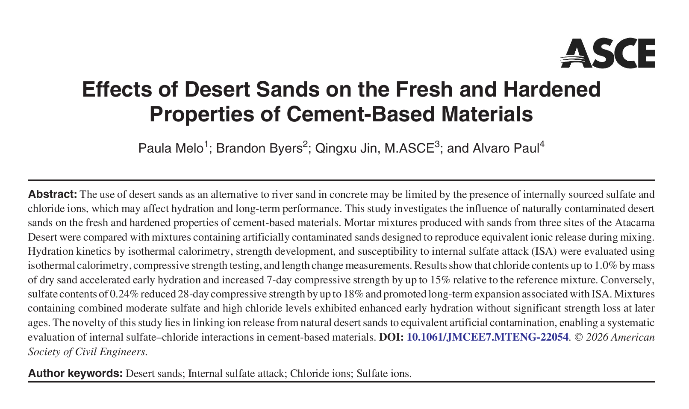

📄 New collaborative publication from RISE Materials Lab out in the Journal of Materials in Civil Engineering (American Society of Civil Engineers): "Effects of Desert Sands on the Fresh and Hardened Properties of Cement-Based Materials".
The world is running out of construction sand. River sand is finite, and extraction carries real environmental cost. Deserts hold enormous sand reserves, but they come with a catch: naturally occurring sulfate and chloride ions that can compromise concrete performance from the inside out.
Our new paper asks: how much contamination is too much, and what actually happens when these ions are already in the sand?
Key findings:
🧂 Chloride contents up to 1.0% by mass accelerated early hydration and increased 7-day compressive strength by up to 15%.
⚠️ Sulfate contents of just 0.24% reduced 28-day compressive strength by up to 18% and drove long-term expansion from internal sulfate attack.
⚖️ Combined moderate sulfate and high chloride levels enhanced early hydration without significant late-age strength loss. The interaction matters more than either ion alone.
Using sands from multiple sources from our collaborators, we linked ion release from natural desert sand to equivalent artificial contamination, enabling a systematic evaluation of internal sulfate–chloride interactions that hasn't been done before.
Congratulations to Paula Melo Hernández for leading this effort, my former postdoctoral scholar Brandon Byers at Michigan State University Department of Civil and Environmental Engineering, and our long-time collaborator Álvaro Paul at Universidad de los Andes (CL)!
Full paper linked in the comments.
#DesertSand #ConcreteResearch #CivilEngineering #ConstructionMaterials #MaterialsScience #ConcreteDurability
